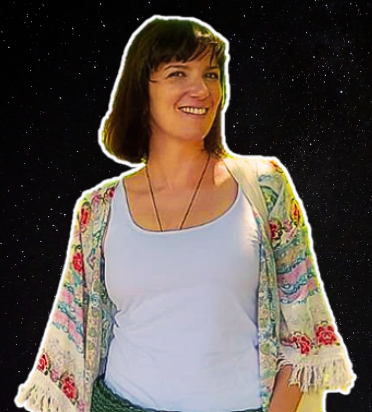

Bióloga por vocação, estudei biologia molecular e genética na Universidade de Lisboa. Apaixonei-me muito cedo pela evolução das proteínas, e cheguei a trabalhar como bioantropóloga antes de me casar com a astrobiologia. Agora estou prestes a defender a minha tese de doutoramento na Universidade de Alcalá (Espanha).
Para ti, o que é a Astrobiologia?
O ramo mais emocionante da ciência que procura responder às questões fundamentais de como a vida começou, e por onde mais poderá existir - O que é a vida, de onde vem, por onde existe e para onde vai?
Aconselhas estudantes da área a ir estudar fora?
Sem dúvida, não só pela formação profissional como também pelo desenvolvimento pessoal. O programa Erasmus+ é uma boa opção para iniciar algo assim, foi como conheci o CAB.
Quais são algumas dificuldades pouco discutidas de realizar um doutoramento?
Uma boa atitude é essencial para que tudo corra bem, porque há muito que vai correr mal.
Que conselho dás aos futuros astrobiólogos portugueses?
Arrisquem, vão para fora e aprendam muito!
O que vem primeiro, os cereais ou o leite?
Pelo que sei, os cereais vêm primeiro, por acuidade culinária bem como em termos evolutivos.